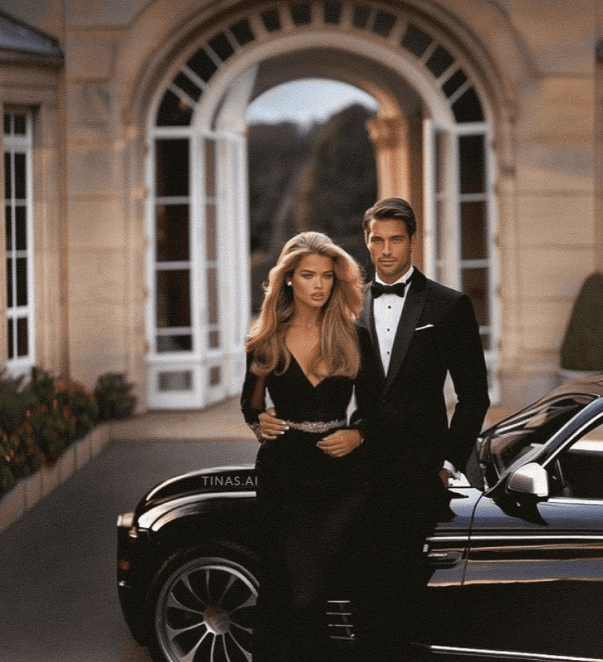

Приглашаем вас разделить вместе с нами этот счастливый день,
к которому мы шли пять лет. Для нас он очень важен, поэтому,
если вы получили приглашение, то занимаете особое место в нашей
жизни.
Увидимся на свадьбе! Обнимаем:)
программа нашего дня
27 июля 2024 г.
Программа построена так, чтобы всем было удобно. У вас утро не начнётся
с раннего подьёма, а мы успеем уделить время друг другу в первой
половине дня.
15:40
Сборы гостей у ЗАГСА
Санкт-Петербург, Английская набережная, д.28
16:20
Роспись в ЗАГС
17:30
Камерный ужин
Бар «Раскольников» Владимирский просп., 19 (этаж 7)
22:30
Завершение вечера с бенгальскими огнями
церемония
16:20
Первый ЗАГС на Английской набережной
банкет
17:30
Бар «Раскольников»
дресскод
Большая просьба подойти с уважением
к дресс-коду, для нас это важно. Белый
и чёрный найдутся у каждого в гардеробе:)

девушкам
Прекрасные девушки! Очень прошу не приходить в белом платье.
Вы можете комбинировать белый и чёрный в своих образах.
Например, совместить белый пиджак и чёрный атласный топ,
или взять платье чёрного или бежевого цвета.
вопросы к нам
Какие подарки предпочтительны?
Для нас лучший подарок — это деньги, т.к мы копим на свадебное
путешествие. Сервиз, постельное белье, домашнюю утварь
мы хотели бы выбрать сами по своим вкусовым предпочтениям.
Также большая просьба не приносить цветы, вместо них можно дарить
вино. Но если вы хотите устроить нам сюрприз — можете посоветоваться
насчёт подарка с нашим свадебным организатором Елизаветой.
Кому задать вопросы насчёт мероприятия и сюрпризов?
Наш свадебный организатор — Елизавета с радостью ответит на ваши
вопросы в день мероприятия и за несколько дней до него. Просьба,
не беспокоить по пустякам. Её номер телефона: +7 (ххх) ххх-хх-хх.
Куда выкладывать фотографии и видео, сделанные на свадьбе?
Приглашаем вступить всех в наш свадбеный чат в телеграм, куда
вы можете в прямом эфире записывать видеосообщения, выкладывать
фотографии и голосовые поздравления. Для нас — это огромная память.
Также в этом чате за несколько дней будет находится вся
организационная информация. Ссылка на чат:
https://t.me/+-3y2xg2u4S45MjRi
Могу ли я взять с собой детей?
Мероприятие рассчитано на взрослую аудиторию и некоторые моменты
могут показаться для маленьких детей утомительными. Мы переживаем о
комфорте каждого гостя и хотим, чтобы все отдохнули душой на нашем
празднике. Однако, если по каким-то причинам не получается оставить
детей младше семи лет дома, то огромная просьба обговорить этот
момент с нами заранее, за несколько месяцев и поставить в
известность, чтобы скорректировать программу дня.